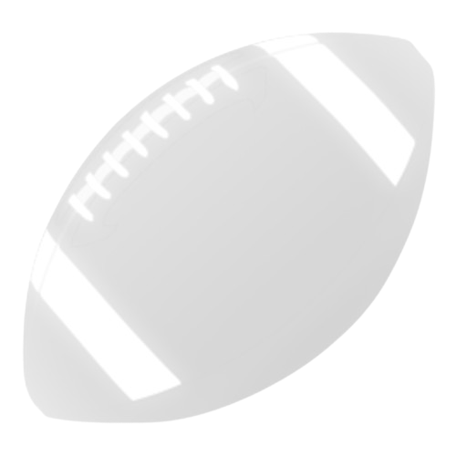
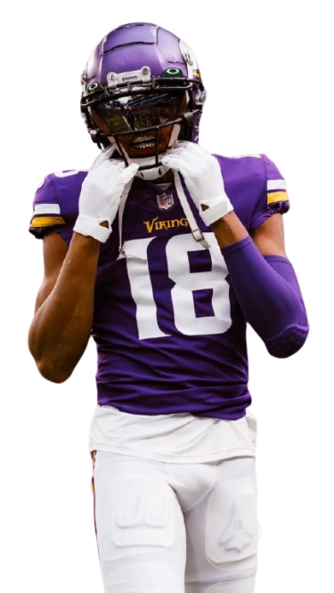
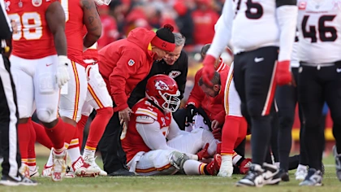
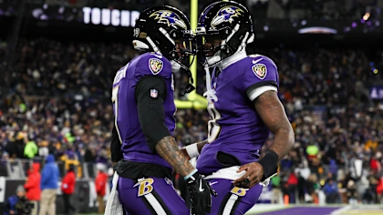

<link rel="stylesheet" href="../css/pages/secao_Apresentacao.css">

<section class="secao1 d-flex flex-column align-items-center justify-content-betweeen container">
    <div class="col-12 d-flex flex-column align-items-center justify-content-center flex-lg-row">
        <div class="col-12 col-lg-8 h-lg-100 d-flex align-items-center div__apresentacao">
            <h1 class="apresentacao__titulo w-75 w-lg-50 m-md-1 text-center">Dentro das 100 jardas, tudo se torna possível</h1>
            
            
        </div>
        <div class="col-12 col-lg-4 d-flex flex-column align-items-center justify-content-evenly">
            <button class="btn btn-dark my-2 ms-5 align-self-start">News</button>
            <div class="card-group w-75 d-flex flex-column">
                <div class="card mb-1 rounded-1">
                    
                    <div class="card-body">
                        <p class="card-text m-0"><small class="text-body-secondary">Kansas City Chiefs -
                                22/12/2024</small></p>
                        <p class="card-text m-0">Resumo de notícias da NFL: Chiefs DL Chris Jones fará ressonância
                            magnética na panturrilha distendida.</p>
                    </div>
                </div>
                <div class="card mt-1 rounded-1">
                    
                    <div class="card-body">
                        <p class="card-text m-0"><small class="text-body-secondary">Baltimore Ravens -
                                22/12/2024</small></p>
                        <p class="card-text m-0">Ravens conquistam a terceira vaga consecutiva nos playoffs e impedem os
                            Steelers de fechar a divisão.</p>
                    </div>
                </div>
            </div>
        </div>
    </div>
    <div class="col-12 d-flex flex-column align-items-center justify-content-center mt-5 mt-lg-1">
        <div class="col-10 col-md-8 col-lg-5 d-flex flex-column align-items-center justify-content-center">
            <p class="text-center">Fique por dentro de tudo que acontece no mundo da NFL e receba atualizações do que
                acontece dentro e fora das quatro linhas.</p>
                <a href="#secao_Noticias">
                    <button class="btn btn-dark py-2">Ler últimas notícias</button>
                </a>
        </div>
    </div>
</section>